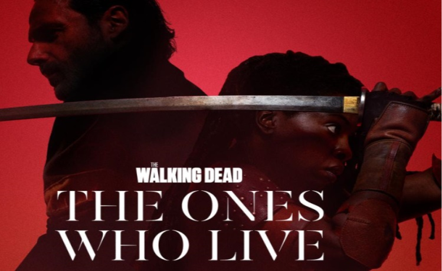

Actualités de The Walking Dead
Actualité- The Walking Dead:Spin Off Daryl Dixon à Paris
Norman Reedus a révélé que les zombies qui apparaîtront dans le spin-off "Daryl Dixon" seront encore plus redoutables que ceux dans la série originale "The Walking Dead". Norman Reedus sera dès le 10 septembre prochain au générique de Daryl Dixon, un spin-off faisant suite à la série horrifique The Walking Dead. Dans cette nouvelle aventure, le héros-titre du programme va se rendre en France pour faire face à de nouveaux ennemis redoutables, parmi lesquels une toute nouvelle forme de zombies !
Actualité- The Walking Dead:Dead City: Spin Off Negan & Maggie
The Walking Dead : Dead City avec Jeffrey Dean Morgan et Lauren Cohan, qui sont revenus dans la peau de Negan et Maggie Greene. Ensemble, ils se rendent dans un Manhattan post-apocalyptique afin de retrouver Hershel, le fils de Maggie. Sur place, le tandem découvre une ville en ruine, peuplée de morts et d’habitants, qui ont fait de New York un monde plein d’anarchie et de terreur. Alors que la diffusion de Dead City s’est achevée le lundi 24 juillet sur OCS en France, Dan McDermott - président du divertissement et d’AMC Studios chez AMC Networks - a annoncé la veille que la série reviendrait pour une saison 2. "Ce prochain chapitre de l’univers The Walking Dead continue de prospérer avec une formidable première saison pour Dead City [...] Nous avons hâte de ramener les fans de Dead City à l’épicentre de Manhattan pour plus d’action avec Maggie et Negan". Une excellente nouvelle pour les fans qui sont déjà impatients de découvrir les nouvelles aventures de ce duo improbable.

Actualité- The Walking Dead: Spin Off Rick Grimes & Michonne
Les fans savent enfin quand ils assisteront aux retrouvailles de Rick et Michonne ! Le compte X officiel de The Walking Dead vient enfin de dévoiler un teaser de sa nouvelle série dérivée, accompagnée de la date de sortie ! Le spin-off The Walking Dead: The Ones Who Live sera diffusé sur la chaine AMC en février 2024. Pour l'heure, la fiction n'a pas de diffuseur français connu : on peut penser qu'elle sera disponible sur OCS, mais la plateforme n'ayant pas diffusé Daryl Dixon, tout est possible ! Ce qui est certain, c'est que le teaser de The Ones Who Live est court mais suffisamment haletant pour nous mettre l'eau à la bouche !
